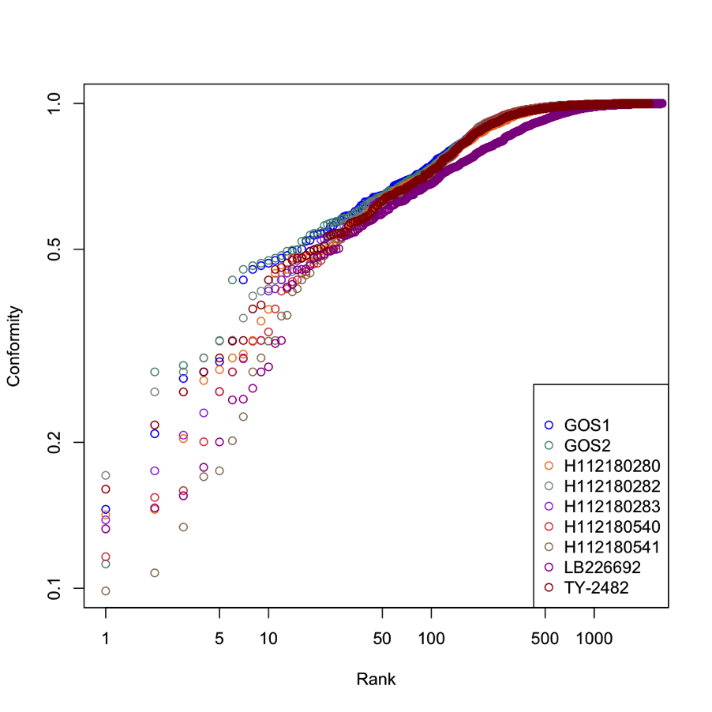

E. coli Outbreak: Updated Analysis of Unique and Divergent Proteins¶
Nine Escherichia coli strains were included in the latest analyses: TY-2482 (complete assembly), LB226692, GOS1, GOS2, H112180280, H112180282, H112180283, H112180540, and H112180541. The proteins from these strains were used to search a specific E. coli database (compiled with 184 E. coli genomes at PATRIC) using BLAST. We calculated Smith-Waterman alignment scores for each of the top ten best-scoring homologs of these proteins and normalized the score to the self-alignment score, creating a conformity score. Conformity scores of 1 indicate that all proteins in the alignment are identical. Proteins with conformity scores of 0.8 or less are considered to be “divergent” from their top ten homologs in E. coli. A graphical representation showing conformity scores for proteins of the nine E. coli strains is provided in the figure below.

A list of all proteins and their conformity scores is provided in an
Excel file
(ecoli9genocav).
Some of the proteins found in the outbreak strains have no homologs in
E. coli. In the conformity score column, these “unique” proteins are
identified by a “-“. The data for the unique proteins for all nine
strains are also integrated into the PATRIC website, with the additional
functionality the site provides (where applicable); you can access those
data at the following links:
The divergent proteins (see above) were compared to virulence and antibiotic-resistance proteins collected from different sources with some interesting discoveries. For example, beta-lactamase, a protein responsible for resistance to beta-lactam antibiotics like penicillins, cephamycins, and carbapenems was found to be identical in the nine outbreak strains (CTX-M type), but very different from their closest homologs prevalent in other E. coli strains (TEM-type). An alignment of these proteins is shown here. Other divergent proteins include ABC transporters, phage-related and outer-membrane proteins.